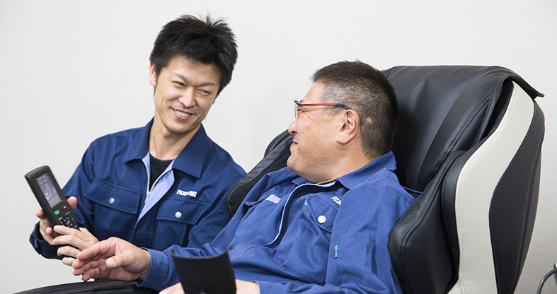

Fuji Medical Instruments has two employees with the title of "Massage Chair Meister" who judges and adjusts whether the massage is comfortable or not. My main job is to experience the feeling of massage chairs and keep adjusting until I feel "comfortable". I am still sitting in a massage chair today to make a massage chair that is "mechanical but like a human hand", relying on the feeling of "feeling" that has permeated the body by experiencing all kinds of massage such as acupressure and manipulative treatment.
Serious adjustment work by the massage chair Meister. I'm not just resting.
Even if you say "massage" in one word, the feeling will change greatly depending on the slight difference in strength, angle, speed, etc. The massage chair Meister feels the difference with the body and adjusts it with an exquisite feeling.
For example, a massage that squeezes the calf tightly with an air bag. Verify the holding time in the squeezed state in units of 0.1 seconds, and search for the most comfortable timing. The subtle differences that can only be seen after sitting in a massage chair for more than 2000 hours and the thorough commitment to comfort create the comfort that even a skilled masseuse will groan.
At Fuji Medical Instruments, this development process is called "cangenialing."
※カンジニアリングはフジ医療器独自の造語です。
「感じる力」＝「人間の身体をセンサーとみなし、マッサージチェアの体感を通して心地よさを判断する力」を用いた「エンジニアリング」＝「技術開発を行うプロセス」
0.1秒単位での細やかな設定が、より多くの人の「心地良い」につながります。
近年マッサージチェアはお年寄りから子どもまで、性別年齢問わず幅広い層に親しまれるようになりました。そこでマッサージチェアマイスターのなかに一つの疑問が生まれます。2人のマッサージチェアマイスターが、老若男女全ての人の“気持ちいい”を計ることができるのか？
そこには「マイスターチーム」の存在があります。社内のさまざまな部署から、体型、性別、年齢など、立場の異なるスタッフを集め、マッサージチェアを体感して意見を出し合い、心地よさを製品に反映しています。
チームのメンバーの視点からマイスターが気づかなかった厳しい意見も集めている。
フジ医療器のマッサージチェアは、例え会社のトップが発売を承認したとしても、マイスターチームが心地よさを納得し、マイスターが許可を出すまで新商品として世に出ることはありません。それは、お買い求めいただいた全てのお客様に心の底からご満足いただくため。あえて厳しい「ヒト」という基準から商品を磨き上げていることが、当社の製品に対するお約束であり、誇りでもあるからです。

“心地よさを感じるスペシャリスト”であるマッサージチェアマイスターの作品。
ぜひ一度、ご体感ください。
心地よさを感じるスペシャリスト。フジ医療器のマッサージチェアは、すべてマイスターの許可のもと製品化されており、製品開発の最終責任者としてマッサージチェアのもみ心地を身体で感じ取り、強さ･角度･スピードなどさまざまな視点で調整する。
1983年、株式会社フジ医療器に入社。
入社以来、モノづくりに徹底的にこだわり魅力的なマッサージチェアを世の中に輩出し続ける。「マッサージ師の手技」の具現化だけでなく、「マッサージチェアでしかできない技」も追求し、マッサージチェアの可能性を広げている。
自ら率いるマイスターチームと共に、日々、マッサージチェアの進化・改善に取り組んでいる。
技術者らしい表現力で、マッサージチェアのモノづくりについて解説を求められることも多く、テレビ東京「カンブリア宮殿」、TBS「がっちりマンデー!!」、テレビ東京「ワールドビジネスサテライト」、NHK「サラリーマンNEO」、朝日新聞、読売新聞、等、多数メディアに出演。
2004年、株式会社フジ医療器に入社。
2009年に営業部より商品部へ異動。マイスターチームの要として、近年の極メカの進化やエアーマジックの改善、自動コースの多様化の構築に大きく貢献。現在は、二代目マッサージチェアマイスターとして、藤代マイスターから絶大なる信頼を得ている。
さわやかなルックスと的確なコミュ二ケーションによりメディアへの露出も多く、朝日放送「おはよう朝日です」、朝日放送「今ちゃんの実は…」、読売テレビ「す・またん！」、
NHK WORLD「GREAT GEAR」、日経産業新聞等、多数メディアに出演。